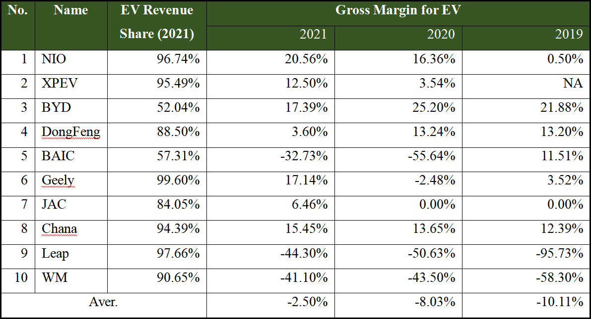

Abstract:
Having observed pessimistic anticipations on the Japanese economy from investors in the form of a mass selloff of JGB and Shorting on both stock and Yen, we discuss the gloomy status of Japanese economy and the YCC from the following aspects.
Weakened national economy since 1990s
Global financial crisis and narrowing interest gap with the rest of the world first brought about stagnation in Japan’s economy. While deflation reduced investment in new business, which hinders its development in globalization, structural problems such as aging population and heavy reliance on import add on to the problem.
Content:
- 2.1 Energy consumption before Energy Crisis
- 2.2 Natural Gas price surge and demand analysis
- 3.1 The supply side
- 3.2 The demand side
- 3.3 Conclusion
Introduction
As a developed capital market, Europe has always been a leader in ESG development. However, since February 2022, affected by the Russian-Ukrainian war and the long-term lack of energy investment, European energy supply has fallen into a shortage and prices have soared. In the short-term, the energy crisis will disrupt the EU's carbon neutrality plan and make the EU pay for its over-reliance on imported natural gas; but in the long run, the EU will embrace new energy more quickly after the adjustment period.
To make a better judgment on the development of new energy in Europe and the future price trend of traditional energy ,we will discuss the shortage of traditional energy in Europe, the development status of new energy, and the compensation of traditional energy shortages.
1. Supply Side: The electricity price has been highly affected by the lack of supply in natural gas
1.1 The price of electricity is determined by Marginal-cost pricing mechanism
Even though having net loss generally happens in the industry, the loss of WM seems significant in the industry. In the reporting period, the WM has the gross loss rate of -41.1%, -43.5%, and -58.3%, far from profiting. The NEV companies generally have lower gross margins compared to other sectors in the supply chain, and WM is one of the companies below the average performance.
Entering 2022, the electricity price for Europe has been escalating a lot. As shown below, the electricity prices for EU main countries have doubled, with the peak exceeding 500 Euros/MWh, due to the unique Marginal Costs Pricing Mechanism, lack of natural gas supply and the failure of other energies to fill the gap.
Figure: Electricity prices in the selected EU countries
 Source: StatistaThe escalation of natural gas's price drives the marginal cost up, lifting the electricity price, determined by Marginal-cost pricing mechanism. The European electricity market has always been priced at marginal cost, which is the price quoted by the last electricity supplier whose transactional electricity meets the load demand. The electricity of the generator set with the quotation higher than the marginal electricity price cannot be traded, and the bidding fails; the generator set with the quotation lower than the marginal electricity price does not settle the spot electricity according to the quotation and the electricity market, but settles according to the marginal electricity price of the system.
Gas-fired power plants used to be marginal suppliers of electricity, meaning that the cost of generating electricity from natural gas determined electricity prices in Europe, because natural gas power plants have the advantage of being able to scale up or down faster than other thermal power plants (e.g., nuclear, lignite, hard coal).
Figure: German marginal power gen costs inclusive of emission allowances(Euros/MWh)
Source: Deutsche Bank, BloombergTherefore, once the price of natural gas rises, the cost of electricity will inevitably rise. As the price of natural gas continues to rise, so does the marginal cost price of natural gas power plants. Even if most of a country's electricity comes from clean energy generation, it has to pay high electricity prices.
1.2 The natural gas supply shortage
According to BP data, about 21% of the total electricity generation in the EU and the UK in 2021 came from natural gas, making it the third largest source of electricity generation in Europe after renewable energy (27%) and nuclear energy (24%).
Figure: 2021 EU & UK electricity source
Source: BP, CICC ResearchFigure: Worsening relation between Russia & EU's Effect on Supply
Source: BruegelThe supply of natural gas from Russia has declined from about 2000MCM/week to ~500MCM/week since the Russia & Ukraine war. According to our estimation, this will bring about a 32 BCM deficit, accounting for ~11% of the current natural gas supply. As the EU uses more than 30% of the natural gas to produce electricity, the deficit would result in a significant difference.
Figure: EU gas storage after heating season
Source: Bruegel1.3. The failure of other energy sources to fill the gap
Coal:
According to Wood Mackenzie statistics, about 11GW of coal power capacity in Europe as a whole has resumed production, accounting for about 1/10 of Europe's total coal power capacity. On the other hand, the utilization hours of coal power have also increased. The utilization hours of the 14 major European coal power producing countries according to our statistics have reached 2,380 hours in the first eight months of this year. It will reach 4,000 hours, a further increase from 3,716 hours in 2021 and 2,658 hours in 2020.
In the EU coal supply, imports account for a relatively high proportion. In 2021, the output of coal and lignite in the 27 EU countries will be about 330 million tons, the external import volume will be about 85 million tons, and the import dependence will be about 22%. In 1H2022, EU coal imports increased by 49% YoY, further increasing import dependence.
Figure: EU coal Import and Production from 2017-2021
Source: IEAHowever, 45% of the EU's annual coal imports come from Russia, with a total value of about 4 billion euros, the embargo on Russian coal will affect 10% of the total coal supply. Although coal can be imported from other countries and regions, the cost will rise, lifting the marginal cost of electricity.
Other Energy:
The high temperature and severe drought in Europe this summer have had a serious impact on power production. Hydropower, nuclear power and solar power generation are not immune, exacerbating the shortage of supply in the European power market.
Hydropower: Continued high temperatures in Europe have led to increased evaporation from rivers, lakes and reservoirs, lower water levels and severe impacts on hydropower generation. In Italy, for example, hydropower accounts for 20% of the country's total electricity production, but the country's hydropower production has plummeted by 40% in the past 12 months.
Nuclear power: Statistics from a Norwegian energy consultancy show that in the first seven months of this year, Europe's hydropower generation fell by 20% compared with the same period last year, while nuclear power generation fell by 12%. 10 Maintenance work and technical problems at French nuclear power plants have reduced their generating capacity. According to media reports, out of France's 62 gigawatts of nuclear power capacity, only 25 gigawatts are currently available.
Solar power: On the other hand, hot weather is also not conducive to solar power generation. High temperature will cause the power loss of photovoltaic panels and shorten the service life. When the temperature exceeds 25 degrees Celsius, the power generation of photovoltaic panels will drop significantly.
2. Energy consumption
Key facts before reading this section:
- Out of total energy available, about 2/3 is consumed by end-users and about 1/3 is mainly lost during electricity generation and distribution or non-energy uses.
- There are two energy products, the primary and secondary energy products.
Figure: Japan food inflation
 Source: Trading economics
Source: Trading economics
- Demands for energy include exports and final energy consumption.
- Gross available energy = Primary production + Recovered & Recycled products + Imports – Export + Stock changes
- Total final consumption (TFC) is the worldwide consumption of energy by end-users (whereas primary energy consumption (Eurostat) or total energy supply (IEA) is total energy demand and thus also includes what the energy sector uses itself and transformation and distribution losses). Final consumption=Direct consumption + secondary energy product consumption= Primary energy consumption (Primary energy products)- loss in distribution.
In this section, we care about the primary energy consumption which is determined by the demand of the households and plays an important role in maintaining the development of the economy.
2.1 Energy consumption before Energy Crisis
2.1.1 Primary and final energy consumption in Europe
Figure: Primary and final energy consumption in the European Union from 2005-2021
Source: European Environment Agency * 1 Mtoe=11630000 MWhIn 2020, the energy consumption in Europe decreased extraordinarily due to the Covid-19 Pandemic. The primary consumption increased about 5.7% but it is still below the pre-pandemic levels.
We can observe that the decrease in pandemic period is similar to the drop pattern in the Global Financial Crisis in 2009. The energy consumption is stable in the long-term. Some turning points are worth noticing. For example, in 2018, the EU's primary energy 12 consumption decreased by 0.9% compared with 2017, following three consecutive years of increasing consumption. This decrease was caused by various factors, in particular energy efficiency improvements, an increase in the share of energy consumed from hydro, wind and solar photovoltaic (PV) power, the economic recession and changing climate conditions.
2.1.2 What kind of energy do people consume in Europe (primary consumption)?
Key takeaways:
Key takeaways:
Between 1990 and 2020 the amount and share of solid fossil fuels in final energy consumption dropped significantly.